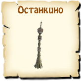

Получено: файл; исходный URL. Исходный файл без перекодирования; авторство не установлено. Страница: источник.
Останкино
браузерная версия; платформа и дата редакции не установлены- Тип
- Постройка
- Версия и дата
- браузерная версия; платформа и дата редакции не установлены
Данные по источнику · браузерная версия; платформа не определена · дата редакции не установлена
Предварительно: Автоматическое чтение цифровых пиктограмм и их подписей; знак ? означает нераспознанное количество, подписи могут содержать ошибки источника. Требуется ручная сверка каждой стадии.. Требуется сверка.
- Исходные подписи и цифры в первой колонке
- [Останкино] | [Доступен на 38-м уровне] | или открыть | за | 42 | [Зомбаксы] | [Стоимость постройки] | 2500000 | или | [Стоимость постройки] | 100 | [Опыт за каждый этап строительства] | 100 | 500 | 800 | 1500 | [Суммарный опыт] | 3800
- Стадии по пиктограммам
- Стадия 1: 150 × Цемент + 50 × Проволока + 80 × Стекло Стадия 2: 30 × Кварц + 40 × Нефть + 10 × Флюгер Стадия 3: 150 × Любовь + 150 × Мир + 2 × Волчиум
Данные по источнику · Мой Мир (Mail.ru), историческая таблица · дата редакции не установлена
Предварительно: Таблица источника; обозначения валют/уровней могут быть пиктограммами и в тексте отсутствовать. Сопоставление названий пристаней и флага Беларуси выполнено по названию и требует сверки.. Требуется сверка.
- Название и первая колонка источника
- Останкино 100 или 2500000 42 ур. или 42
- Опыт, стадии, производство и модернизация
- Опыт: 7000 = 5000+500+500+1000 Стадии строительства: 150 Цемент + 50 Проволока + 80 Стекло 30 Кварц + 40 Нефть + 10 Флюгер 150 Любовь + 150 Мир + 2 Волчиум Создает: Создает мозг на 1 день: 2 Глазная росянка + 10 Любовь
Данные по источнику · браузерная версия; платформа не установлена · дата редакции списка не установлена
Предварительно: Прочитан список. Имена файлов пиктограмм приводятся как есть: они не гарантируют идентификацию материала. Alt-атрибуты источника содержат ошибки. Отдельная статья и дата не проверены.. Требуется сверка.
- Сведения из списка, включая имена файлов пиктограмм
- [рисунок: ostankino.png] Доступна с 42 уровня Стоимость: 2 500 000 монет или 100 зомбаксов Опыт: 7000 (5000+500+500+1000) Стадии строительства: 1. 150 [рисунок: Cement.png] + 0 50 [рисунок: Provoloka.png] + 80 [рисунок: steklo.png] 2. 0 30 [рисунок: Kvarc.png] + 0 40 [рисунок: Neft.png] + 10 [рисунок: Fluger.png] 3. 150 [рисунок: Lybov.png] + 150 [рисунок: mir.png] + 0 2 [рисунок: Volchium.png] Даёт возможность человеку создавать мозги: 1. 0 1 [рисунок: mozgi_na_den.png] = 0 2 [рисунок: Hellija.png] + 10 [рисунок: Lybov.png] 2. 0 1 [рисунок: mozgi_na_den.png] = 0 1 [рисунок: Glaznaya_rosyanka.png] + 10 [рисунок: Lybov.png]


Данные по источнику · браузерная игра; платформа страницы не уточнена · 11.01.2014 — публикация; редакция неизвестна
Предварительно: Прочитана конкретная строка; старые сведения, у источника встречаются опечатки. Возможны заимствования, независимость от других сайтов не доказана.. Требуется сверка.
Данные по источнику · браузерная версия Мой Мир Mail.ru · 05.07.2011
Предварительно: Историческая фанатская заметка, количество может отличаться от других версий.. Требуется сверка.
- Мой Мир, 05.07.2011
- После превращения в человека: мозги на день из 2 глазной росянки и 10 любви. Другой источник приводит 1 глазную росянку; возможна разница версии или ошибка.
Данные по источнику · историческая браузерная игра, площадка не указана · 05.05.2012 — дата публикации; дата редакции неизвестна
Предварительно: Сопоставлено по единственному точному названию; различные версии или одноимённые объекты могут различаться. Названия файлов и alt пиктограмм сохранены как подписи, не заменяют проверенную расшифровку; изображения и цены требуют ручной сверки. Независимость от zombi-ferma.ru и других сайтов не установлена.. Требуется сверка.
- Текст и пиктограммы источника
- [изображение: m_ostankino.png] Доступна с 42 уровня Стоимость: 2 500 000 монет или 100 зомбаксов Опыт: 7000 (5000+500+500+1000) Стадии строительства: 1. 150 [изображение: Cement.png] + 050 [изображение: Provoloka.png] + 80 [изображение: Steklo.png] 2. 030 [изображение: Kvarc.png] + 040 [изображение: Нефть; Neft.png] + 10 [изображение: Fluger.png] 3. 150 [изображение: Lybov.png] + 150 [изображение: mir.png] + 02 [изображение: Волчиум; Volchium.png] Даёт возможность человеку создавать мозги: 1. 01 [изображение: Мозги на день; mozgi_na_den.png] = 02 [изображение: Хеллия; Hellija.png] + 10 [изображение: Lybov.png] 2. 01 [изображение: Мозги на день; mozgi_na_den.png] = 01 [изображение: Глазная росянка; Glaznaya_rosyanka.png] + 10 [изображение: Lybov.png]
Связанные сущности
нет проверенных связей — требуется сверка.
Источники
- Каталог построек: строка и пиктограммы; дата неизвестна
- Zombiemail: таблица построек, часть 2; версия Мой Мир
- ZOMBIA: прочитана карточка в каталоге
- Адрес отдельной карточки, отдельный доступ не проверен
- Zommbie.at.ua: раздел 38 построек, запись 2014 года
- Прочитанная отдельная статья
- ZF.3dn: историческая карточка постройки